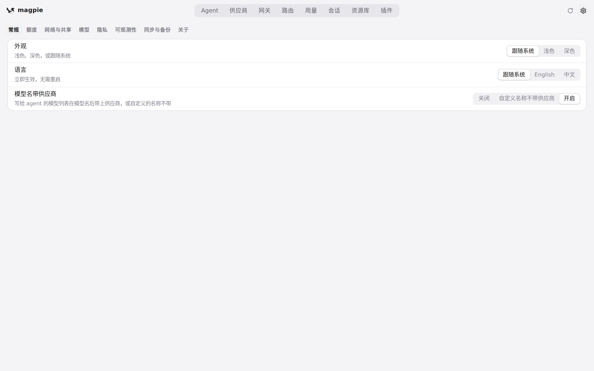
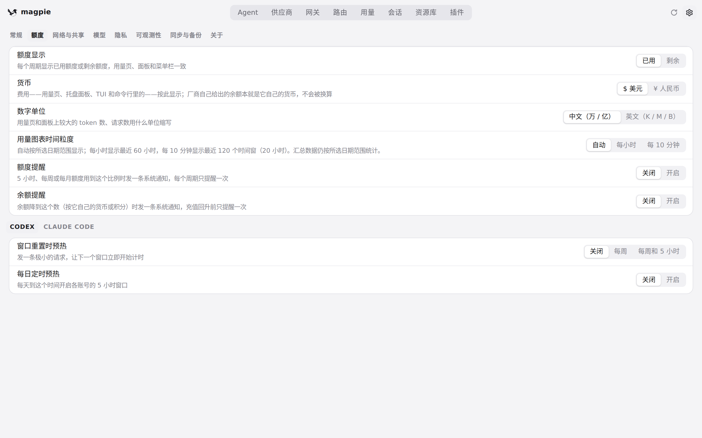
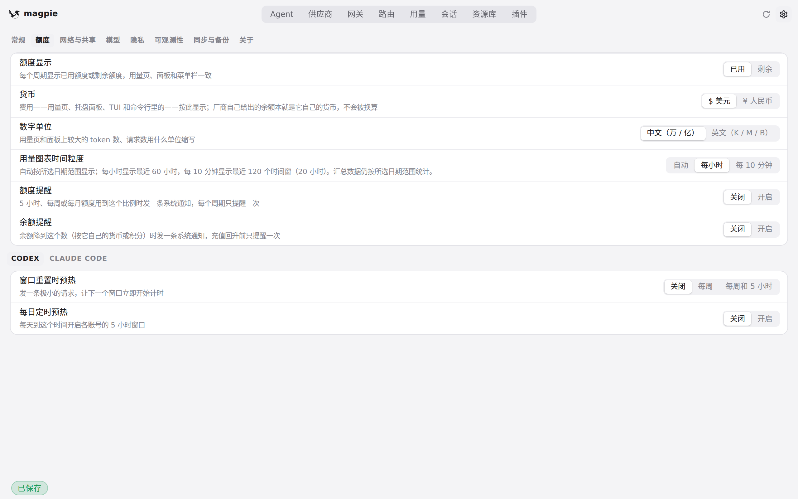
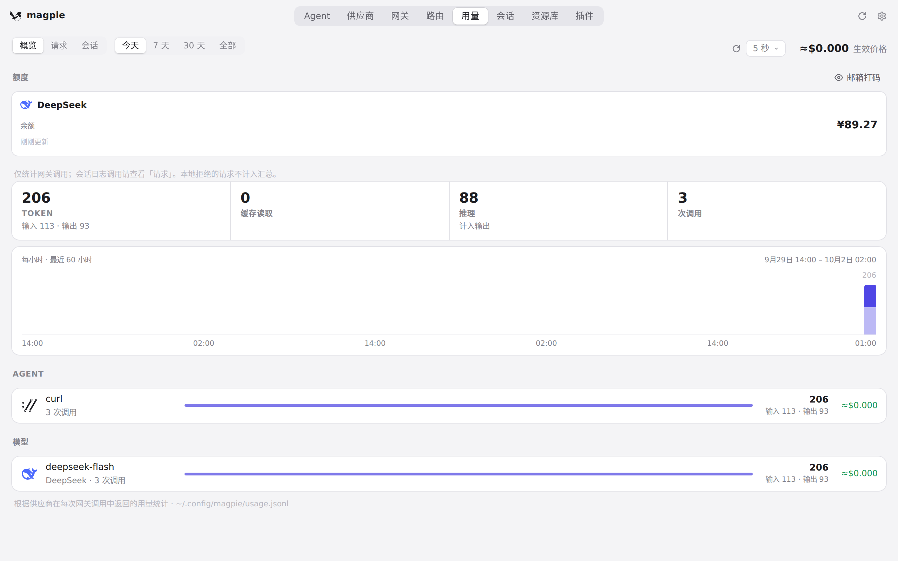
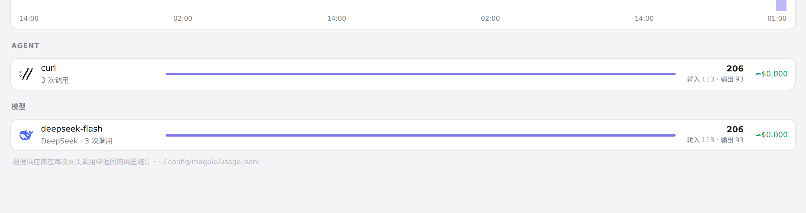
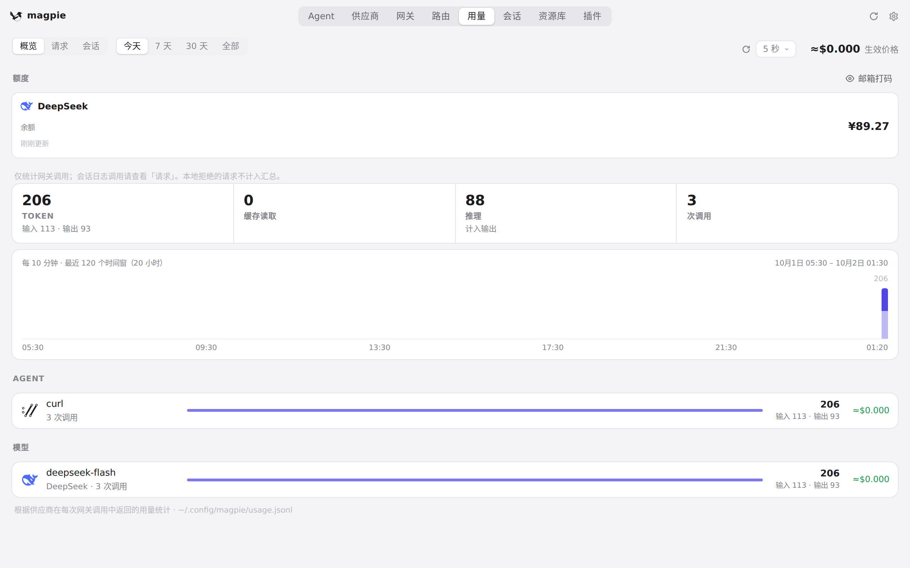

#495 界面预览
commit d840714 · 回到 PR · 用量页概览的图表新增「每小时（60 根柱）/ 每 10 分钟（120 根柱）」滚动时间轴，并在图表上方显示时间范围与时间点标注，同时新增设置项「用量图表时间粒度」；此外模型行的 tok/s 从副标题移到了 token 数旁边。
红线是鼠标走过的轨迹，红色圆环是一次点击；底部文字是这一步在做什么。空格暂停，← → 逐段查看。

设置里的「用量图表时间粒度」 · 设置打开后的页面

设置里的「用量图表时间粒度」 · 「额度」标签页里的偏好设置

设置里的「用量图表时间粒度」 · 选中「每小时」后的设置行

概览图表：每小时与每 10 分钟 · 「每小时」下的用量概览图表，以及图表上方的时间范围与时间标注

概览图表：每小时与每 10 分钟 · 概览下方模型行的 token 数与 tok/s 所在位置

概览图表：每小时与每 10 分钟 · 「每 10 分钟」下的用量概览图表：柱宽、柱间距与时间标注